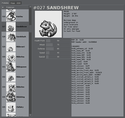
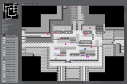
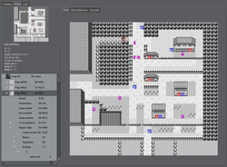
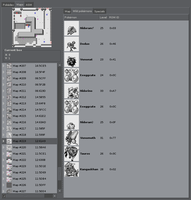
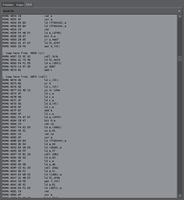

Pokanalysis
Pokanalysis analyses first generation Pokémon
ROMS… At least Red and
Blue…
US. ☺
It's a totally useless application (unless you are just
curious about the game) since you can't edit the ROM
with it. I insist on it: Pokanalysis is a
VIEWER, not an editor.
Also, you won't find any ROM here.
Screenshots





Current features
- Complete Pokédex
- Basic disassembler
- Main game area (Kanto) with merged or split maps
- Interior maps (houses, caves, etc.)
- Entering maps by clicking on warps/doors
- Wild Pokémon with their names and sprites
- Text of most of the signs
- Special items (hidden objects for example)
- Entities (people, trainers, items) and their default orientation
And also:
- A lot of bugs
- A lot of incomplete features
- A lot of missing features
- A lot of unsupported ROMS
Dependencies
- Python >= 2.6
- PyGTK (GTK+ >= 2.16)
- CMake (build only)
- GCC (build only)
How to build & use
% tar -zxf pokanalysis-*.tar.gz
% cd pokanalysis-*
% make
% ./pokanalysis /path/to/your/pokemon/rom.gb
Developers
The best way to contact me directly is to use jabber
(u, at pkh.me), or ubitux on IRC
(see you on freenode,
or darkmyst).
Latest project source tree is available at
Github.
Feel free to send patches, docs and kisses
❤
License
GPL v3.
TODO ideas
- Map names
- Special items text and type
- Support more text (entities, special signs, …)
- Trainers Pokémon
- More ROMS support (better addresses support)
- Collisions
- Search engine (wild Pokémon, items, …)
- Better maps GUI (previous/next, area position…)
- Editor?
{kind=link}
{kind=link}
{kind=link}
{kind=link}
{kind=link}